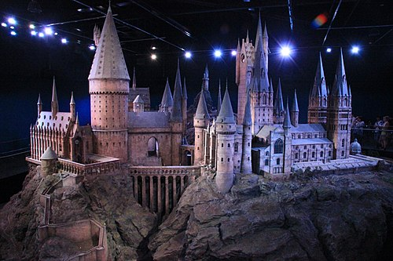

Tudo sobre Harry Potter
Harry Potter é uma série de sete romances de fantasia escrita pela autora britânica J. K. Rowling. A série narra as aventuras de um jovem chamado Harry James Potter (Harry Tiago Potter, no Brasil), que descobre aos 11 anos de idade que é um bruxo ao ser convidado para estudar na Escola de Magia e Bruxaria de Hogwarts. O arco de história principal diz respeito às amizades de Harry com outros bruxos de sua idade, como Ron Weasley e Hermione Granger, e também com o diretor de Hogwarts Albus Dumbledore, considerado o maior dos magos, e seus conflitos com o bruxo das trevas Lord Voldemort, que pretende se tornar imortal, conquistar o mundo dos bruxos, subjugar as pessoas não-mágicas e destruir todos aqueles que estão em seu caminho, especialmente Harry Potter, a quem ele considera seu maior rival.
Desde o lançamento do primeiro romance, Harry Potter e a Pedra Filosofal, em 26 de junho de 1997, os livros ganharam uma imensa popularidade, aclamação da crítica e foram um sucesso comercial em todo o mundo. A série também recebeu algumas críticas, incluindo a preocupação com o tom cada vez mais sombrio conforme a história progredia. Até maio de 2015, já haviam sido vendidas 450 milhões de cópias em todo o mundo, tornando a série a best-seller da história, sendo traduzida para 73 idiomas. Os últimos quatro livros consecutivamente foram considerados os mais vendidos da história, sendo que o último livro vendeu cerca de 11 milhões de cópias nos Estados Unidos nas primeiras 24 horas após o seu lançamento.
Enredo
Os romances giram em torno de Harry James Potter, um órfão que descobre com 11 anos que é um bruxo, que vive no mundo comum de pessoas não-mágicas, conhecidas como "trouxas". O mundo bruxo é mantido em segredo, presumivelmente para evitar a perseguição de bruxas e bruxos. Tal habilidade é inata e essas crianças são convidadas a participar de uma escola de magia exclusiva, que ensina as habilidades necessárias para ter sucesso no mundo bruxo. Harry torna-se um estudante da Escola de Magia e Bruxaria de Hogwarts e é ali onde a maioria dos eventos da série acontecem. Enquanto Harry se desenvolve através da adolescência, ele aprende a superar os problemas que ele enfrenta: mágicos, sociais e emocionais, incluindo desafios adolescentes comuns, como amizades, paixões e provas, e o grande teste de preparar a si mesmo para o confronto no mundo real que temos pela frente.
Temática e Conteudo
Por ser uma série na qual cada livro equivale a cerca de um ano de vida do protagonista, seu conteúdo amadurece conforme Harry cresce. Os leitores que começaram a ler a saga ainda muito jovens também vão amadurecendo enquanto lêem. A estrutura da história, inclusive, torna-se mais complexa e sofisticada a cada volume. Os livros de Rowling se passam nos anos 1990, na Inglaterra "trouxa" moderna, com carros, telefones e videogames. Os problemas no mundo mágico são sólidos e reais como os do nosso mundo — preconceito, depressão, ódio, sacrifício, pobreza, morte. "Harry vai para seu mundo mágico, e este é melhor que o mundo que ele deixou? "Só porque ele encontra pessoas melhores", explica Rowling.
Em contraste, outro tema importante é a morte. "Os meus livros abordam bastante a morte. Começam com a morte dos pais de Harry. Há a obsessão de Voldemort em derrotar a morte e conquistar a imortalidade a qualquer preço [...]. Eu percebo porque é que Voldemort quer conquistar a morte. Todos nós temos medo dela", disse Rowling. De fato, o nome de Voldemort significa "voo da morte" em Latim e Francês, e "roubar a morte" em Francês e Catalão. Os livros colocam o bem contra o mal e o amor contra a morte. A perseguição de Voldemort para evitar a morte, que inclui episódios como beber sangue de unicórnio e separar a sua alma através do uso de horcruxes, contrasta com o sacrifício de Lilian Potter, seu amor por Harry e a magia extraordinária que o seu gesto deixou nele, um sacrifício que Voldemort nunca poderá entender ou apreciar.